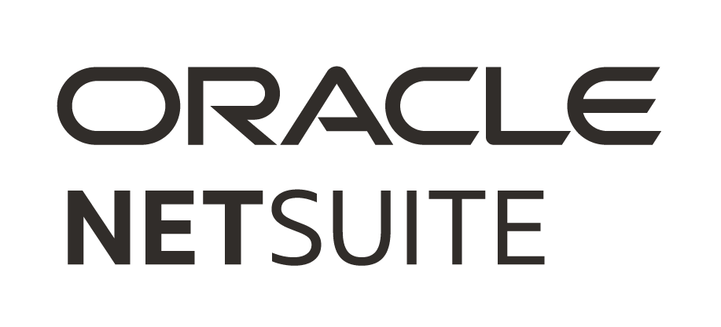
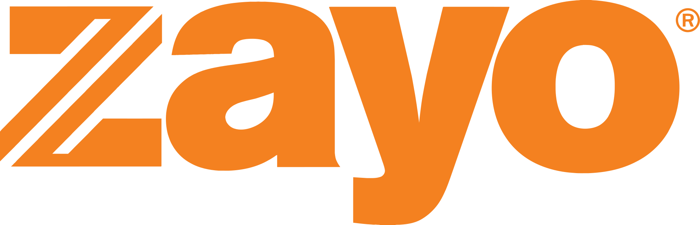

I map A to Z before I move.
At Zayo, I traced the full order-to-cash flow, from order management and dispatch to inventory and billing, before writing a single epic.
Technical Program Manager Toronto, Canada
 a technical program manager who builds the systems businesses run on.
a technical program manager who builds the systems businesses run on.For 10+ years I've led the software behind how companies sell, sign, deliver, bill and grow their teams: Salesforce and NetSuite integrations, zero-to-one internal tools, and lately, AI automation.
Open to Technical Program Manager roles · Toronto or remote
Clients & products I've worked with
 Fiat
Fiat Google
Google
Oracle NetSuite
ZayoAbout
From contract to order to invoice, I partner with business leaders to turn operational problems into software their teams use every day.
My experience expands to internal tools for operations, HR and marketing, where I take early ideas and grow them into products teams rely on. I've done this across telecom infrastructure, pharma and health marketing, and automotive.
At Zayo, I traced the full order-to-cash flow, from order management and dispatch to inventory and billing, before writing a single epic.
I piloted agile practices that improved delivery agility by 28%, and prototyped AI tools for billing audits and ad creative.
I coached 4 teams to 17% faster releases by surfacing tradeoffs early, not by pushing harder.
The media planning tracker made the ops team's day easier and lifted media operations efficiency by 33% year over year.
Work
Organized by the business process each one serves, from the first sale to the people who keep the business running.
01 Sell
0→1 · Problem → solutionConnected sales opportunities in Salesforce to contract management (CLM) and work-order ticketing, so a closed deal flows straight into a contract and a job, with no re-keying.
End-to-end visibility from deal to delivery
Klick Health
02 Contract & order
0→1 · Problem → solutionOrder-to-Cash is everything between a customer signing and the payment landing. I connected Salesforce order management and NetSuite ERP with dispatch, inventory, billing and customer service.
Release health tracked with AI-assisted workflows
Zayo Group
03 Deliver
Idea → productGrew an early budget-tracking idea into an agency tool with native Google Campaign Manager integration, so planners could see media spend against budget in one place.
+33% media operations efficiency YoY
Klick Health
04 Bill & audit
0→1 · Problem → solutionAn AI audit that reviews expense submissions and flags budget anomalies automatically, before they turn into billing errors.
Fewer financial discrepancies, protected margins
Klick Health
05 People
Idea → productExpanded a starting brief from People Practice leads into one system for PTO, performance reviews and talent scouting.
Scaled operations through 40% business growth
Klick Health
06 Marketing
Idea → productTook an AI experiment and grew it into mass production of banner ads and A/B messaging variants, connected directly to the CRM.
Faster creative iteration
Klick Health
Approach
Before any solution, I ask what the team actually needs to find out.
When stakeholders bring everything, I ask for the one thing that can't slip.
I map the user's journey and pain points end to end, before anyone sketches a screen.
We agree how to measure it: the user problem, the business problem, and the impact.
Ship the smallest version that teaches us something, then track it against what we agreed.
Shaped by the GV Design Sprint ↗ and a lot of stakeholder meetings.
Built on my own
Side projects where I take the whole thing end to end, from idea to design, code and launch.
A governed handoff from design to production. A Figma plugin checks designs against 13 accessibility, security and design system rules; a custom MCP server hands clean specs to Claude Code or Cursor; CI re-checks every pull request.
A guided mobility app for adults 50 and over: a 7-move body check-in, joint-by-joint explanations, and a weekly training plan. Built with Claude and deployed on Vercel.
A website for a retirement and social-security law firm in Porto Alegre, Brazil, with WhatsApp booking, Google Ads and SEO.
+280% click-through rate in the first month
Visit the site ↗Toolkit
Case studies
Connecting Salesforce and NetSuite ERP with dispatch, inventory, billing and service, with release health tracked through AI-assisted workflows.
Automated budget anomaly flagging on expense submissions, cutting financial discrepancies and protecting margins.
An agency tool with native Google Campaign Manager integration that made media operations 33% more efficient year over year.
Coached 4 cross-functional teams to 17% higher release velocity in 6 months, then cut process turnaround 15% with AI-assisted releases.
Experience
Driving Order-to-Cash release roadmaps and the "Plan & Commit" process across engineering, operations and leadership, spanning Salesforce order management, dispatch workflows, and inventory maintenance and management.
Led systems discovery and roadmap execution across enterprise platforms through a 6-market international expansion, delivering billing infrastructure integrations, AI pharma commercialization tool experiments and executive delivery dashboards.
Ran backlogs, sprint planning and release sequencing for business technology workflows across HRIS, financial platforms and infrastructure, supporting 40% YoY business growth, and coached 4 teams to 17% faster release velocity.
Supported $10M in AOR initiatives, including AbbVie Humira omnichannel campaigns and the Astellas drug launch campaign driving HCP prescriptions and the co-pay business. Piloted agile practices that increased delivery agility by 28%.
Coordinated timelines, deliverables and resources for Chrysler Group, Jeep and Ram digital portfolios supporting $1M+ in annual marketing across digital, dealers and trade shows.
Education Bachelor of Management and Organizational Studies, Finance · Western University, 2010–2014